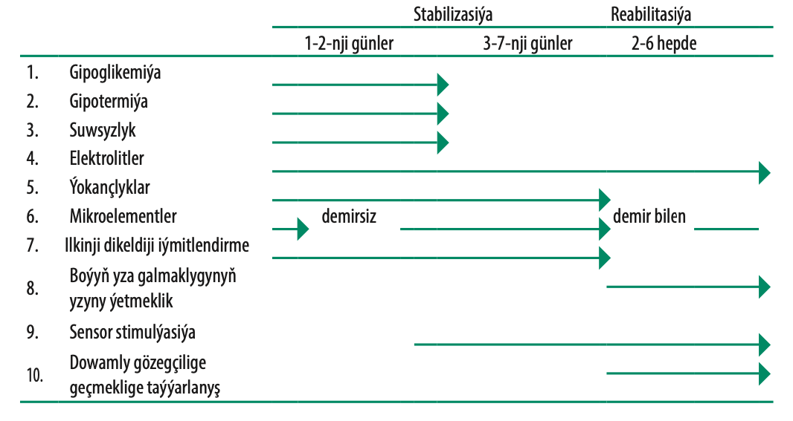

Hassahanadaky bejeriş meýilnamasy
Şok ýagdaýynda düşýän agyr iýmitlendirmäniň bozulmalary bilen çagalary sortlamak (ýagdaýynyň agyrlygynyň derejesine görä) maksady bilen baha berlişi 1 bapda beýan edilen, bap 1.2 nusga 8 we bap 1.4. Buýnuzyň ýaralarynda A witamin we hloramfenikol bilen ýa-da tetrasiklin bilen göz damjalaryny we atropin damjalaryny beriň, göze fiziologik erginli hasa goýuň we onuň daşyndan daňy goýuň (bap 7.5.1). Agyr ganazlyk bar bolsa derrew bejerilmekligi talap edýär (bap 7.5.2).
Umumy bejergi 10 tapgyrdan (ädimden) ybarat, olary iki tapgyra (faza) bölüp bolýar: ilkinji stabilizasiýa we reabilitasiýa (21-nji tablisa seret).
Jetwel 21. Agyr iýmitlendirme bozulmalary bolan çaganyň alnyp barlyşynyň grafigi

7.4.1 Gipoglikemiýa
Her bir agyr iýmitlendirmäniň bozulmalary bilen düşen çagalarda gipoglikemiýa howpy bar, şol sebäpli olary hassahana düşenden soň derrew naharlamaly ýa-da 10% glýukozanyň erginini ýa-da saharozany bermeli (aşak seret). Bu çagalary ýygy-ýygydan iýmitlendirmek wajypdyr.
Kesel kesgidi
Her bir gipoglikemiýa guman edilen ýagdaýynda, ganyň düzüminde glýukozanyň möçberini derrew anyklamaly (mysal üçin ekspress-usul „Dekstrostiks“ bilen). Ganyň düzüminde glýukozanyň möçberi <3 mmol/l (<54 mg/dl) bolsa, gipoglikemiýa hasaplanýar. Eger glýukozanyň möçberini ganda anyklamaklyga mümkinçilik bolmasa, hemme agyr iýmitlendirmäniň bozulmalary bolan çagalarda gipoglikemiýany guman etmeli.
Bejergi
 50 ml 10% glýukozanyň erginini ýa-da saharozany (1 doly çaý çemçe şeker 3 nahar çemçe suw bilen garmaly) agyzdan ýa-da nazogastral zont arkaly beriň, ondan soň mümkin boldygyça çalt ilkinji iýmitlendirmäni geçiriň.
50 ml 10% glýukozanyň erginini ýa-da saharozany (1 doly çaý çemçe şeker 3 nahar çemçe suw bilen garmaly) agyzdan ýa-da nazogastral zont arkaly beriň, ondan soň mümkin boldygyça çalt ilkinji iýmitlendirmäni geçiriň.- Çagany derrew F-75 bejeriş bulamagy bilen (eger ol bar bolsa) naharlaň, soňra bolsa her 2-3 sagatdan naharlamaklygy dowam ediň, gijelerine we gündizine.
- Eger-de çaga huşsyz bolsa, damardan 10% glýukozanyň erginini 5 ml/kg hasabynda ediň, eger-de damardan sistemany çatyp bolmasa, onda 10% glýukozanyň ýa-da saharozanyň erginini nazogastral zont arkaly beriň (goşundy 1.3). Eger-de 10% glýukozanyň ergini ýok bolsa, onda çaganyň diliniň aşagyna bir çemçe şeker goýuň bir ýa-da iki damja suw bilen garyşdyrylan hem-de bu emi her 20 minutdan gaýtalap duruň gipoglikemiýa ýagdaýy gaýtalanmaz ýaly. Çagalaryň şekeri derrew ýuwtmazlygyna seredip durmaly, bu ýagdaýda onuň aşgazan içege ýollaryndan sorulmagy haýallanmagy mümkin, eger-de bu ýagdaý bolýan bolsa, onda çaga gaýtadan bir çemçe şeker beriň. Çagany nazogastral zont arkaly iýmitlendirmäni dowam ediň gipoglikemiýa gaýtadan döremez ýaly.
- Gabat gelýän antibiotikleri beriň (bap 7.4.5).
Gözegçilik
Eger glýukozanyň möçberi ilkinji barlanylanda pes bolan bolsa, 30 minutdan soň derňewi gaýtalaň (barmakda ýa-da ökjeden „Dekstrostiks“ testiň kömegi bilen, eger ol bar bolsa).
- Eger ganda glýukozanyň möçberi <3 mmol/l (<54 mg/dl) saklanýan bolsa, onda 10% glýukozanyň ýa-da şekeriň erginini beriň.
- Eger rektal beden gyzgyny <35,5 °C bolsa ýa-da aňy bulaşan bolsa, „Dekstrostiks“ testiň kömegi bilen ganda glýukozanyň möçberini täzeden anyklaň we degişli bejergini geçiriň.
Öňüni alyş çäreler
- Çagany derrew naharlap başlaň (Ilkinji dikeldiji iýmit bölüme bap 7.4.7), we çagany her 2,0 sagatdan naharlaň. Çagada suwsyzlyk bar bolsa, ilki bilen suwsyzlygyň bejergisini geçiriň. Iýmitlendirmäni gijelerine hem dowam ediň.
- Ejesine çagada her bir ýüze çykyp biläýjek howply alamatlara gözegçilik etmelidigini maslahat beriň, oňa çagany naharlama we ony ýylylykda saklamaga kömek ediň.
- Çagada, içiniň çişmegi alamatynyň döremänligine seredip duruň.
7.4.2 Gipotermiýa
Iýmitlendirmäniň bozulamalry bolan çagalarda gipotermiýa ýygy duş gelýär we köplenç bagly bolan gipoglikemiýany ýa-da agyr ýokanjyň barlygyny görkezýär.
Kesel kesgidi
 Eger akzillýar beden gyzgyny <35 °C ýa-da adaty elektron termometr bilen anyklanmaýan bolsa, çagada gipotermiýany guman ediň. Eger pes temperaturaly termometr bar bolsa, rektal beden gyzgynyny (<35,5 °C) gipotermiýany tassyklamak üçin ölçäň.
Eger akzillýar beden gyzgyny <35 °C ýa-da adaty elektron termometr bilen anyklanmaýan bolsa, çagada gipotermiýany guman ediň. Eger pes temperaturaly termometr bar bolsa, rektal beden gyzgynyny (<35,5 °C) gipotermiýany tassyklamak üçin ölçäň.
Bejergi
Hemme gipotermiýaly çagalary adaty gipoglikemiýadan we ýokançlyklardan bejerýärler.
- Çagany derrew naharlaň, soňra ony her 2,0 sagatdan naharlamany dowam ediň, eger-de içiniň çişmesi bolmasa, suwsyzlyk bolan ýagdaýynda ilki regidratasiýa geçiriň.
- Çagany ýyladyň. Onuň hemişe ýylylykda bolmaklygyna gözegçilik ediň (kellesi bilen), ýa-da onuň üstüni ýyly ýorgan bilen ýapyň ýa-da gyzdyryjy enjamy (lampany) çaganyň ýanynda ýakyp goýuň, ýöne ony çaga tarap gönükdirmäň, ýa-da çagany ejesiniň garnyna goýuň (ten-tene gatnaşyk) we olaryň ikisinem ýyly ýorgan ýa-da/we egin-eşik bilen ýapyň.
- Çagany gapma-garşylykly şemaldan goraň.
- Gabat gelýän antibakterial serişdeleri damardan ýa-da sanjym görnüşinde belläň (bar 7.4.5).
Gözegçilik
- Çaganyň beden gyzgynyny her 2 sagatdan ölçäp duruň, ol 36,5°C çenli galýança. Eger gyzdyryjy enjam ulanýan bolsaňyz, onda her ýarym sagatdan ölçäp duruň.
- Çaganyň üstüniň hemişe ýapyklygyna gözegçilik ediň, esasan hem gijelerine, çaganyň kellesi ýyly ýaglyk bilen gyzgyny ýitirmezlik üçin ýapyk bolmaly.
- Hemme gipotermiýa anyklanan ýagdaýlarda gipoglikemiýany anyklamaklyk üçin barlap duruň.
Öňüni alyş çäreleri
- Çagany derrew naharlar, soňra her 2-3 sagatdan naharlamaklyga dowam ediň, gijelerine we gündizine.
- Çaganyň krowadyny otagyň ýyly ýerinde goýuň we açyk şemalyň bolmazlygyna we çaganyň üstüniň
mydama ýapyk bolmalydygyna seredip duruň.
- Çaganyň ejesi bilen ýatmaklygyny, gijelerine ejesi ony gyzdyrar ýaly üpjün ediň, has gowysy “kenguru” usuly ulanmakdyr (bap 3.11.2), ejesiniň we çaganyň üstüni ýorgan bilen ýapyň.
- Çagany üşetmejek boluň (mysal üçin, suwa düşürilen wagtynda ýa-da anyklaýyş emleri geçirilende).
- Çaganyň arlyklaryny, öl egin-eşikleriny çalşyp duruň, onuň özi we kürsüsi mydama gury bolar ýaly.
7.4.3 Suwsyzlyk
Kesel kesgidi
Agyr iýmitlendirmäniň bozulmalary bolan çagalarda suwsyzlygyň derejesini goýmaklykda giperdiagnostika ýykgynlygyň barlygy anyklanýar. Bu hem çagalarda diňe amaly alamatlar esasynda suwsyzlygyň derejesini anyklamaklygyň kynlygy bilen bagly. Suwly içgeçmeli ýa-da bugşugmasy az bolan hemme agyr iýmitlendirmäniň bozulmalary bolan çagalarda aram suwsyzlygy guman ediň. Gipowolemiýanyň we gan aýlanyşygyň haýallamagy çişler bilen birlikde hem bolup biljekligini bellemek wajypdyr.
Bejergi
Damardan regidratasiýa geçirmäň, kadadan çykma şok ýagdaýlary bolup durýar (nusga 8). Regidratasiýany haýaldan, agyzdan ýa-da nazogastral zont arkaly, agyr iýmitlendirmäniň bozulmalary bolan çagalar üçin niýetlenen suwuklyklar bilen geçiriň (5-10 ml/sagatda, maksimak berilmeli wagt 12 sagat). BSGG-yň standart ORS-iň düzüminde natriniň mukdary köp we kaliniň mukdary bolsa azlygy sebäpli, agyr iýmitlendirmäniň bozulmalary bolan çagalar üçin ulanmaklyk bolmaýar. Bu çagalara ýörite regidratasion erginler iýmitlendirmäniň agyr bozulmalarynda ulanylýan ReSoMal beriň (onuň taýýarlanylyşyna aşak seret ýa-da taýýar ReSoMal satuwda bar bolsa ulanyň).
- Regidratasion ergin ReSoMal agyzdan ýa-da nazogastral zont arkaly has haýaldan, agyr iýmitlendirmäniň bozulmalary bolmadyk çagalar bilen deňeşdireniňden, beriň:
 5 ml /kg her 30 minutdan ilkinji 2 sagadyň dowamynda beriň;
5 ml /kg her 30 minutdan ilkinji 2 sagadyň dowamynda beriň;- soňra 5–10 ml/kg/s indiki 4-10 sagadyň dowamynda beriň. Takyk göwrüm çaganyň näçe içip biljekdigine, onuň täretiniň sanyna we gaýtarma alamatynyň barlygyna bagly bolup durýar.
- Eger-de ReSoMal ergini ýok bolsa, BSGG-yň standart ORS ergininiň ýarysyny oňa kaliý we glýukozany aşakdaky görkezilişi ýaly goşmak bilen beriň, kadadan çykma mergi ýa-da suwly içgeçme bolup durýar.
- 0-njy sagatlarda regidratasiýa geçirmeklik dowam edilýän bolsa, F-75 (bap 7.4.8) ýmiti ReSoMal-yň ýerine beriň. F-75 –iň ReSoMal-daky ýaly göwrümini ulanyň.
- Eger-de çagada şok ýa-da agyr suwsyzlyk bar bolsa, we oňa regidratasiýany agyzdan ýa-da nazogastral zont arkaly geçirip bolmaýan bolsa, damardan suwuklyklary goýberiň-Ringer laktat 5% dekstroza bilen ýa-da Darrou ergini ýarym konsentrasiýaly 5% dekstroza bilen. Eger-de bu erginler ýok bolsa, 0,45% natriý hlorid erginini 5% dekstrozanyň ergini bilen ulanyň (nusga 8).
Gözegçilik
Regidratasiýa geçirildigiçe çagada dem alyş sany peselmeli we bugşugy kadalaşmaly. Ýaşyň emele gelmegi, gözüň we ýemigiň ýeňil çökgünligi öňkä seredeniňden, deriniň maýyşgaklygynyň kadalaşmagy, netijeli regidratasiýanyň alamatlary bolup durýar, emma bu alamatlary käbir iýmitlendirmäniň agyr bozulmalary bolan çagalarda doly regidratasiýadan soň hem görüp bolmaýar. Çaganyň agramynyň alşyna gözegçilik ediň.
Regidratasiýa geçirilişini tapgyrlaýyn ilkinji 2 sagadyň dowamynda her ýarym sagatdan geçiriň, soňraky 4-10 sagadyň dowamynda bolsa her bir sagatda geçiriň. Gipergidratasiýa alamatlarynyň emele gelşini barlap duruň, sebäbi bu howply ýagdaý we ýiti ýürek ýetmezçiligini döredip biler. Indikileri barlap duruň:
- agramynyň köpelişine, has çalt agramynyň köpelmez ýaly;
- dem alyş sany;
- ýürek uruş sany;
- bugşugynyň sany (soňky gözegçilikden soň çaga bugşugdymy?);
- täretiniň we gaýtarmanyň sany.
Gipergidratasiýa alamatlarynyň dörän wagtynda (dem alyş sanynyň 1 minutda 5 sana köpelmegi we pulsuň 1 minutda 15 sana köpelmegi), ReSoMal ergini goýbermekligi bes ediň we baha bermekligi ýenede bir sagatdan gaýtalaň.
Öňüni alyş çäreleri
Öňüni alyş çareler suwly içgeçmede agyr iýmitlendirmäniň bozulmalary bolmadyk çagalarda öňüni alyş çäreleriniň geçirilişi ýalydyr (A meýilnama nusga 15), kadadan çykma diňe bu ýagdaýlarda ORS standart erginine derek ReSoMal ergini ulanylýar.
- Eger çaga göwüs süýdi bilen emdirilýän bolsa ony dowam etdirmeli.
- Dikeldiji iýmitlendirmäni F-75 ergini bilen başlaň.
- Iýmitlendirmeleriň arasynda ReSoMal erginini suwuk täret bilen ýitirilýän suwuklygyň owezini dolmak üçin beriň. Her suwuk täretden soň 50-100 ml ergini bermeklik maslahat berilýär.
| ReSoMal ergininiň resepty, standart BSGG-yň ORS esasynda | ||
| Komponentleri | Mukdary | |
| Suw | 2 l | |
| BSGG ORS | Bir haltajyk 1 l ergine | |
| Saharoza | 50 g | |
| Elekrtolit-mineral ergin | 40 мл | |
1 ReSoMal ergini takmynan 37,5 -mmol Na, 40 -mmol K we 3 -mmol Mg saklaýar.
| Konsentrirlenen elektrolit-ergininiň taýýarlanylyşyň resepti |
Ilkinji iýmitlendirme üçin ergini taýýarlamak üçin we boý taýdan yza galmaklygyň öwezini dolmak üçin, şeýlede ReSoMal ergini taýýarlamak üçin ulanylýar. Käbir kompaniýalar taýýar elektrolit-minerallary külke görnüşindäki garyndylary taýýarlaýarlar. Eger satuwda olar bolmasa ýa-da elýeter bolmasa, onda indikileri goşup özüňiz taýýarlaň (2500 ml):
| Ingradiýetler | g | mol/20 ml |
| Kaliý hlorid:KCl | 224 | 24 mmol |
| Trikaliý sisrat | 81 | 2 mmol |
| Magniý hlorid: MgCl2. 6H2O | 76 | 3 mmol |
| Sink asetaty: Zn asetat. 2H2О | 8,2 | 300 mmol |
| Misiý sulfaty CuSO4. 5H2O | 1,4 | 45 mmol |
| Suw: goşmaly | 2500 ml |
Eger bar bolsa, selen (0,028 g selenat natriý, NaSeO4•10H20) we ýod (0,012 g kaliý ýodid, KI) 2500 ml suwa goşuň.
- Komponentleri gaýnap sowan suwda garyşdyryň.
- Taýýar ergini arassa gaplara salyň we sowadyjylarda hiliniň uzak wagtlap saklanmaklygy üçin saklaň. Eger ergin bulaşan bolsa, ony ulanmaň. Täze ergini her aýda taýýarlaň.
- Konsentrirlenen elektrolit-mineral ergininiň 20 ml her 1000 ml süýt önümlerine goşuň. Eger elektrolit-mineral erginini taýýarlamaklyga mümkinçilik ýok bolsa, taýýar külkeler hem bolmasa, K, Mg we Zn aýratynlykda beriň. Hlorid kaliniň 10% erginini (100 g 1 litr suwa) we 1,5% sink asetatynyň erginini (15 g 1 litr suwa) taýýarlaň.
Oral regidratasion ergin ReSoMal ulanylanda 45 ml esasy kaliý hlorid erginini 40 ml elektrolit- mineral ergininiň ýerine guýuň.
Süýt garynydylaryny taýýarlamak üçin: F-75 we F-100 ulanylanda 22,5 ml kaliý hlorid erginini 20 ml elektrolit-mineral erginiň ýerine 1000 ml iýmite goşuň. Agyzdan 1,5% sink asetatyny 1 ml/kg/günüň dowamynda beriň. Sulfan magniý 50% erginini bir sapar 0,3 ml/kg sanjym görnüşinde (maksimal möçber 2 ml) ediň.
7.4.4 Elektrolit balansynyň bozulmagy
Agyr iýmitlendirmäniň bozulmalary bolan hemme çagalarda belogyň, kaliniň we magniniň ýetmezçiligi bolýar, bu ýetmezçilikleriň öwezini dolmaklyga 2 we ondan hem köp hepde gerek bolýar. Çişler köplenç bedende kaliýiň ýetmezçiligi we natriniň saklanylmagy bilen baglydyr. Çişleri diuretik serişdeler bilen bejermäň. Bedende natriniň köp mukdary bolýar, plazmada onuň mukdarynyň azlygyna seretmezden. Uly möçberlerde natrini we belogy bermeklik ölüm howpyny döredip biler.
Bejergi
- Çaga kaliýiň mukdaryny goşmaça bermeli (3–4 mmol/kg gündelik).
- Şeýlede, magniniň goşmaça mukdary hem gerek (0,4–0,6 mmol/kg gündelik).
Kaliýi we magnini çaganyň iýmitine ony taýýarlanylýan wagty goşmak bolar, eger-de siz taýýar iýmiti ulanmaýan bolsaňyz. Kombinirlenen elektrolit-mineral ergini bap 7.4.3). Kaliýiň goşmaça möçberini bermek üçin bu erginiň 20 ml iýmite goşuň. Şeýlede satuwda bar bolan haltajyklardaky gury süýtleri ulansa hem bolar (ýörite iýmitlendirmäniň bozulmalary bolan çagalar üçin).
- Regidratasiýa wagtynda pes mukdarda natriý bolan erginleri, ReSoMal ýaly beriň (resepte bap 7.4.3).
- Iýmite nahar duzuny goşmaň.
7.4.5 Ýokançlar
Agyr iýmitlendirmäniň bozulmalary bolan çagalarda ýokanjyň adaty alamatlary beden gyzgynynyň ýokarlanmagy ýaly bolmaýar, emma olarda dürli ýokançlyklar bolmagy mümkin. Şol sebäpli hassahana düşen agyr iýmitlendirmäniň bozulmalary bolan çagalarda haýsydyr bir ýokanç bolmagy mümkin, şonuň üçin olara antibakterial bejergini belläň. Agyr ýokanjyň alamatlary gipotermiýa we gipoglikemiýa bolup biler.
Bejergi
Hemme agyr iýmitlendirmäniň bozulmalary bolan çagalara belläň:
- giň spektrli antibakterial serişdäni;
- gyzamyga garşy waksinasiýany, eger çaga ≥ 6 aýlyk bolsa we oňa sanjym edilmedik bolsa, ýa-da çaga >9 aýlyk we öň sanjym edilen bolsa. Eger çaga şok ýagdaýynda bolsa oňa sanjym etmäň.
Giň spektrli antibakterial serişdäniň saýlanylyşy
- Eger çagada göze görünýän gaýraüzülmedik ýiti agyr iýmitlendirmäniň bozulmasy bar bolsa, amoksasillin agyzdan 5 günüň dowamynda beriň (möçberleri üçin goşundy 2).
- Eger gaýraüzülmeler bar bolsa (gipoglikemiýa, gipotermiýa ýa-da çaga haýal ýa-da örän gowşak) ýa-da beýleki gaýraüzülmeler, parenteral antibiotikleri beriň:
- benzilpenisillin (50000 HB/kg sanjym ýa-da damardan her 6 sagatdan) ýa-da ampisillin (50 mg/kg
sanjym ýa-da damardan her 6 sagatdan) 2 günüň dowamynda, soňra agyzdan amoksasillin (25-40
mg/kg her 8 sagatdan 5 günüň dowamynda beriň)
- plýus
- gentamisin (7,5 mg/kg sanjym, damardan) 1 sapar günüň dowamynda 7 gün beriň.
Bu nusgalar antibiotiklere rezistentligiň ýerli häsiýetleri esasynda üýtgedilip bilner.
Bellik: Giň spektrli antibiotiklere goşmaça metronidazol (7,5 mg/jg her 8 sagatdan 7 gün) berip bolar, emma bu bejerginiň netijeliligi kliniki barlaglarda subut edimedik.
- Beýleki ýokançlyklara gabat gelýän bejergini geçiriň:
- Eger çagada meningit guman edilýän bolsa, lýumbal punksiýa ediň, keseli tassyklamak üçin we
çagany bap 6.3.1 görkezilen nusgalaryň biri boýunça bejeriň;.
- Eger başga ýokançlyklar, mysal üçin, pnewmoniýa, ganly içgeçme, deriniň ýa-da ýumşak
dokumalaryň ýokanjy anyklanan bolsa, gabat gelýän antibakterial serişdeleri beriň.
- Eger çagada gyzzyrma keseli ganyň derňewinde anyklanan ýa-da ekspress testde goşmaça bolsa,
gyzzyrma garşy serişdeleri beriň.
- Inçe kesel giňden ýaýran keseldir, emma bu kesele garşy serişdeler diňe bu kesel doly tassyklanan ýa-da düýpli guman etmeler bar bolan ýagdaýlarynda bermeli (bap 7.5.5).
- AIW- bilen galtaşmada bolan çagalar barada bap 8.
Gurçuk inwaziýasyny bejergisi
Eger gurçuk inwaziýasynyň alamatlary bar bolsa, olaryň bejergisini reabilitasiýa fazasy tamalanýança goýmaly. Bir sapar albendazol ýaşyna görä ýa-da mebendazol 100 mg agyzdan 2 sapar günüň dowamynda 3 gün beriň. Bu ýokançlyklar giňden ýaýran ýurtlarda, çagalara gurçuk inwaziýasynyň alamatlary bolmadyk ýagdaýlarynda hem hassahana ýerleşdirilenden 7 günden soň beriň.
AIW- ýokanjy
AIW-ýokanjy giňden ýaýran ýurtlarda, agyr iýmitlendirmäniň bozulmalary bolan çagalar hem AIW- testini, antiretrowirus bejergini (ARB) geçirmekligi çözmek üçin, geçmelidirler. Eger-de çagada AIW ýokanjy anyklanan bolsa, oňa metaboliki bozulmalar we sepsis ýagdaýy aýrylyşandan soň antiretrowirus bejergini belläň. Bu çagalar hassahanada ýa-da öýde antiretrowirus bejergi alyp başlandan soň 6-8 hepdäniň dowamynda gözegçilikde, olarda irki wagtda metaboliki bozulmalary we opportuniki ýokançlary ýüze çykarmak üçin, bolmaly.
Gözegçilik
Eger ýokarda agzalan antibakterial bejergiden soň çagada anoreksiýa bar bolsa, 10 günlik kursy tamamlanýança bejergini dowam ediň. Eger anoreksiýa alamatlary ýitmese, çagany täzeden doly barlagdan geçiriň.
7.4.6 Mikroelementleriň ýetmezçiligi
Hemme agyr iýmitlendirmäniň bozulmalary bolan çagalarda witaminleriň we minerallaryň ýetmezçiligi bar. Ganazlyk ýagdaýynyň barlygyna seretmezden agyr iýmitlendirmäniň bozulmalary bolan çagalara derrew demir serişdelerini bermäň, olaryň işdäsiniň gowulanýança we agramy köpelip başlaýança garaşyň (adaty 2 hepdä golaý), sebäbi demir serişdeleri ýokançlyklaryň geçişini erbetleşdirmegi mümkin.
Poliwitaminler, düzüminde A witamini, foliý turşysy, sink we mis bar bolan F-75 we F-100 iýmitleriň düzüminde bar. Taýýar emeli süýtler ulanylanda bu mikroelementleri goşmaça bellemekligiň geregi ýok.
Eger-de anamnezinde gözlerinde zeperlenme we gyzamyk bolmasa çaga A witaminiň uly möçberlerini bermegiň geregi ýok, sebäbi ol ýeterlik möçberde taýýar süýt garyndylaryna goşulýar.
Bejergi
- A witamini bejergini birinji güni, soňra bolsa 2-nji we 14-nji günleri beriň agyzdan beriň, ýöne diňe çagada A witaminiň ýetmezçiligi alamatlary bar bolsa, mysal üçin göz perdesiniň deşilmegi ýa-da gyzamyk anamnezinde (bap 7.5.1):
- <6 aýlyk çagalara– 50 000 MЕ;
- 6–12 aýlyk çagalara – 100 000 MЕ;
- uly çagalara – 200 000 MЕ
- Demir serişdelerini 3 mg/kg möçberde agramyny köpeltmek üçin ýörite iýmit F-100 başlanandan soň 2-nji güni berip başlaň. Stabilizasiýýa döwründe we ulanmaga taýýar bejeriş iýmiti (UTBI) alýan çagalar demir serişdelerini bermäň..
Eger-de çaga haýsydyr bir bejeriş iýmiti almaýan bolsa, onda oňa indiki mikroelementleri azyndan 2 hepde beriň:
- foliý turşysyny (5 mg 1-nji gün, soňra 1 mg/günüň dowamynda);
- poliwitaminleri sirop görnüşinde – 5 ml;
- sinkiň serişdelerini -2 mg/kg/gününň dowamynda;
- misiň serişdelerini -0,3 mg/kg/günüň dowamynda
7.4.7 Ilkinji dikeldiji iýmitlendirme
Ilkinji döwürde çaga bedeniniň gowşaklygy sebäpli iýmitlendirmä ýuwaşlyk bilen çemeleşmeli.
Bejergi
Ilkinji dikeldiji iýmitlendirmäniň tapgyrlarynyň esasy aýratynlyklary:
- Bejergi iýmitleriniň ilkinjileri pes osmolýarly we düzüminde laktoza az bolmaly, bu iýmitleri çagalara ýygy-ýygydan bermeli (her 2-3 sagatdan);
- Nazogastral zont arkaly iýmitlenme, eger-de çaga ≤80% iki sany yzygiderli iýmit iýýän bolsa.
- Energetiki gymmatlylygy: 100 ккаl/kg/günüň dowamynda
- Belok: 1–1,5 g/kg/günüň dowamynda
- suwuklyk: 130 ml/kg/günüň dowamynda ýa-da 100ml/kg/günüň dowamynda, eger çagada çişler bar bolsa;
- eger çaga göwüsden emdirilýän bolsa, emdirmekligi dowam ediň, ýöne ilkinji iýmitiň aşakda görkezilen möçberlerini alýanlygyna göz ýetiriň
| Günler | Ýygylygy | Möçberi/bir sapar | Möçber/kg/g. d |
| 1–2 | her 2 s | 11 ml | 130 ml |
| 3–5 | her 3 s | 16 ml | 130 ml |
| ≥ 6 | her 4 s | 22 ml | 130 ml |
Maslahat berilýän başlangyç iýmitler we olary berlişiniň düzgüni (aşak seret) ýokarda agzalan talaplaryň öwezini dolmak üçin düzülen. Süýdiň esasyndaky iýmitler, mysal üçin F-75 (100 ml 75 kkal we 0,9 gr belok bolan) köp çagalary iýmitlendirmek üçin bolýar (bu iýmitleriň taýýarlamagyň reseptleri bap 7.4.8). Bu F-75 iýmit däneleriň esasynda taýýarlanylanlygy sebäpli şekeri däneleriň uny bilen çalyşýanlygy sebäpli pes osmolýarlydyr we uzaga çeken içgeçmeli çagalar üçin hem peýdalydyr, ýöne bu iýmiti bişirmeli bolýar.
Göwrümi kem-kemden ulaltmak we iýmitlendirmäniň ýygylygyny azaltmak bilen geçirilýän iýmitlenmäniň düzgüni bap 7.4 beýan edilen. Işdäsi gowy bolup, çişleri bolmadyk çagalar üçin bu düzgün 2-3 günde ýerine ýetirilip bilner.
Bellik: Eger-de işdärleriň sany az bolsa, 2 sagatdan iýmitlendirmä agyr näsaglarda üns beriň we ony ýerine ýetirip bolmasa 3 sagatdan iýmitlendirmäni üpjün ediň. Beýleki ejeleri ýa-da ideg edýanleri iýmitlendirmekde kömek bermegi haýyş ediň. Olara nähili iýmitlendirmegi görkeziň we soňra gözegçilik ediň. Çagalary gijelerine naharlamaly, şol sebäpli saglygy goraýyş işgärleriniň iş tertibini hem üýtgedilmegi mümkin. Eger-de gijelerine iýmitlendime mümkinçiligini gurnap bolmasa, onda gijeki iýmitlendirmäniň arasyny mümkin boldygyça azaltmaň (çagalar iýmitlenmesiz galýan wagtynda, olarda gipoglikemiýa döreme howpy we şol sebäpli ölüm howpy ýokary).
Eger-de çaganyň iýýän iýmiti (gaýtarma bilen ýitirilýän iýmit aýrylandan soň) 80 kkal/l ýetmeýän bolsa, ýygy-gygydan emdirýän hem bolsaňyz, çagany iýmäge goldaýan hem bolsaňyz, onda çaga galan möçberi nazogastralzont arkaly beriň. Ilkinji dikeldiji iýmitlendirme döwründe çaga 100 kkal/kg/günüň dowamynda başga iýmiti bermäň. Gyzgyn howada, çaganyň derlemek bilen suwuklygy ýitirýänligi sebäpli, mümkin suwuk goşmaça möçberleri gerek bolar.
Gözegçilik
Indiki maglumatlary barlaň we bellik ediň:
- hödürlenen we galdyrylan iýmitiň möçberi;
- gaýtarma;
- täretiň ýygylygy we konsistensiýasy;
- çaganyň agramy (gündelik).
7.4.8 Çaganyň ösüşde yza galmagynyň öwezini dolmaga gönükdi- rilen iýmitlenme
Çaganyň ösüşde yza galmagynyň öwezini dolmaga gönükdirilen iýmitlenme döwrüni köplenç ambulator şertlerde alyp barýarlar. Çaganyň reabilitasiýa fazasyna ýetenligi we ösüşde yza galmagynyň öwezini dolmaga gönükdirilen iýmitlenme talap edýän alamatlar indikiler bolup durýar:
- işdäsiniň dikelmegi;
- gipoglikemiýa ýagdaýlarynyň ýoklygy;
- endamyndaky çişleriň azalmagy ýa-da ýoklygy.
Jetwel 21. F-75 bir sapar berilmeli möçberi dürli ýygylykdaky iýmitlendirilişde (takmynan 130 ml/kg/günüň dowamynda)
| Çaganyň beden agramy (kg) |
Her 2 sagatdan (ml/bir sapar): 20
Her 3 sagatdan (ml/bir sapar) 30
Her 4 sagatdan (ml/bir sapar) 45
Her 2 sagatdan (ml/bir sapar): 25
Her 3 sagatdan (ml/bir sapar) 35
Her 4 sagatdan (ml/bir sapar) 50
Her 2 sagatdan (ml/bir sapar): 25
Her 3 sagatdan (ml/bir sapar) 40
Her 4 sagatdan (ml/bir sapar) 55
Her 2 sagatdan (ml/bir sapar): 30
Her 3 sagatdan (ml/bir sapar) 45
Her 4 sagatdan (ml/bir sapar) 55
Her 2 sagatdan (ml/bir sapar): 30
Her 3 sagatdan (ml/bir sapar) 45
Her 4 sagatdan (ml/bir sapar) 60
Her 2 sagatdan (ml/bir sapar): 35
Her 3 sagatdan (ml/bir sapar) 50
Her 4 sagatdan (ml/bir sapar) 65
Her 2 sagatdan (ml/bir sapar): 35
Her 3 sagatdan (ml/bir sapar) 55
Her 4 sagatdan (ml/bir sapar) 70
Her 2 sagatdan (ml/bir sapar): 35
Her 3 sagatdan (ml/bir sapar) 55
Her 4 sagatdan (ml/bir sapar) 75
Her 2 sagatdan (ml/bir sapar): 40
Her 3 sagatdan (ml/bir sapar) 60
Her 4 sagatdan (ml/bir sapar) 80
Her 2 sagatdan (ml/bir sapar): 40
Her 3 sagatdan (ml/bir sapar) 60
Her 4 sagatdan (ml/bir sapar) 85
Her 2 sagatdan (ml/bir sapar): 45
Her 3 sagatdan (ml/bir sapar) 65
Her 4 sagatdan (ml/bir sapar) 90
Her 2 sagatdan (ml/bir sapar): 45
Her 3 sagatdan (ml/bir sapar) 70
Her 4 sagatdan (ml/bir sapar) 90
Her 2 sagatdan (ml/bir sapar): 50
Her 3 sagatdan (ml/bir sapar) 70
Her 4 sagatdan (ml/bir sapar) 95
Her 2 sagatdan (ml/bir sapar): 50
Her 3 sagatdan (ml/bir sapar) 75
Her 4 sagatdan (ml/bir sapar) 100
Her 2 sagatdan (ml/bir sapar): 55
Her 3 sagatdan (ml/bir sapar) 80
Her 4 sagatdan (ml/bir sapar) 105
Her 2 sagatdan (ml/bir sapar): 55
Her 3 sagatdan (ml/bir sapar) 80
Her 4 sagatdan (ml/bir sapar) 110
Her 2 sagatdan (ml/bir sapar): 55
Her 3 sagatdan (ml/bir sapar) 85
Her 4 sagatdan (ml/bir sapar) 115
Her 2 sagatdan (ml/bir sapar): 60
Her 3 sagatdan (ml/bir sapar) 90
Her 4 sagatdan (ml/bir sapar) 120
Her 2 sagatdan (ml/bir sapar): 60
Her 3 sagatdan (ml/bir sapar) 90
Her 4 sagatdan (ml/bir sapar) 125
Her 2 sagatdan (ml/bir sapar): 65
Her 3 sagatdan (ml/bir sapar) 95
Her 4 sagatdan (ml/bir sapar) 130
Her 2 sagatdan (ml/bir sapar): 65
Her 3 sagatdan (ml/bir sapar) 100
Her 4 sagatdan (ml/bir sapar) 130
Her 2 sagatdan (ml/bir sapar): 70
Her 3 sagatdan (ml/bir sapar) 100
Her 4 sagatdan (ml/bir sapar) 135
Her 2 sagatdan (ml/bir sapar): 70
Her 3 sagatdan (ml/bir sapar) 105
Her 4 sagatdan (ml/bir sapar) 140
Her 2 sagatdan (ml/bir sapar): 75
Her 3 sagatdan (ml/bir sapar) 110
Her 4 sagatdan (ml/bir sapar) 145
Her 2 sagatdan (ml/bir sapar): 75
Her 3 sagatdan (ml/bir sapar) 110
Her 4 sagatdan (ml/bir sapar) 150
Her 2 sagatdan (ml/bir sapar): 75
Her 3 sagatdan (ml/bir sapar) 115
Her 4 sagatdan (ml/bir sapar) 155
Her 2 sagatdan (ml/bir sapar): 80
Her 3 sagatdan (ml/bir sapar) 120
Her 4 sagatdan (ml/bir sapar) 160
Her 2 sagatdan (ml/bir sapar): 80
Her 3 sagatdan (ml/bir sapar) 120
Her 4 sagatdan (ml/bir sapar) 160
Her 2 sagatdan (ml/bir sapar): 85
Her 3 sagatdan (ml/bir sapar) 125
Her 4 sagatdan (ml/bir sapar) 165
Her 2 sagatdan (ml/bir sapar): 85
Her 3 sagatdan (ml/bir sapar) 130
Her 4 sagatdan (ml/bir sapar) 170
Her 2 sagatdan (ml/bir sapar): 90
Her 3 sagatdan (ml/bir sapar) 130
Her 4 sagatdan (ml/bir sapar) 175
Her 2 sagatdan (ml/bir sapar): 90
Her 3 sagatdan (ml/bir sapar) 135
Her 4 sagatdan (ml/bir sapar) 180
Her 2 sagatdan (ml/bir sapar): 90
Her 3 sagatdan (ml/bir sapar) 140
Her 4 sagatdan (ml/bir sapar) 185
Her 2 sagatdan (ml/bir sapar): 95
Her 3 sagatdan (ml/bir sapar) 140
Her 4 sagatdan (ml/bir sapar) 190
Her 2 sagatdan (ml/bir sapar): 95
Her 3 sagatdan (ml/bir sapar) 145
Her 4 sagatdan (ml/bir sapar) 195
Her 2 sagatdan (ml/bir sapar): 100
Her 3 sagatdan (ml/bir sapar) 145
Her 4 sagatdan (ml/bir sapar) 200
Her 2 sagatdan (ml/bir sapar): 100
Her 3 sagatdan (ml/bir sapar) 150
Her 4 sagatdan (ml/bir sapar) 200
Her 2 sagatdan (ml/bir sapar): 105
Her 3 sagatdan (ml/bir sapar) 155
Her 4 sagatdan (ml/bir sapar) 205
Her 2 sagatdan (ml/bir sapar): 105
Her 3 sagatdan (ml/bir sapar) 155
Her 4 sagatdan (ml/bir sapar) 210
Her 2 sagatdan (ml/bir sapar): 110
Her 3 sagatdan (ml/bir sapar) 160
Her 4 sagatdan (ml/bir sapar) 215
Her 2 sagatdan (ml/bir sapar): 110
Her 3 sagatdan (ml/bir sapar) 160
Her 4 sagatdan (ml/bir sapar) 220
| F-75 we F-100 dikeldiji iýmitlendirme üçin düzümleri | ||
|
(ilkinji iýmit: dänelileriň esasynda) |
(ösüşde yza galmaklygyň öwezini dolmak üçin) | |
| Ýagsyz gury süýt, g | 25 | 80 |
| Şeker, g | 70 | 50 |
| Dänelileriň yny, g | 35 | — |
| Ösümlik ýagy, g | 27 | 60 |
| Elektrolit-mineral ergini, ml | 20 | 20 |
| Suw: goşmaly ml çenli | 1000 | 1000 |
| 100 ml düzümi | ||
| Energiýa, kkal | 75 | 100 |
| Belok, g | 1,1 | 2,9 |
| Laktoza, g | 1,3 | 4,2 |
| Kaliý, mmol | 4,2 | 6,3 |
| Natriý, mmol | 0,6 | 1,9 |
| Magniň, mmol | 0,46 | 0,73 |
| Sink, mg | 2,0 | 2,3 |
| Mis, mg | 0,25 | 0,25 |
| % belok energiýasy | 6 | 12 |
| % ýaglaryň energiýasy | 32 | 53 |
| Osmolýarnosty mоsm/l | 334 | 419 |
F-75 süýt bolmadyk wagtynda ýerini tutujy.
Mekgejöwen-soýaly garyndynyň (MSG) ýa-da bugdaý-soýaly garyndynyň (BSG) ýarym fabrikatyny ulanyň
- MSG ýa-da BSG 50 g
- Şeker 85 g
- Ösümlik ýagy 25 g
- 20 ml elektrolit-mineral ergin
- Gaýnan suw umumy 1000 ml bolýança goşuň
Eger süýt bolmasa F-100 üçin alternatiw önümler
Mekgejöwen-soýaly garyndynyň (MSG) ýa-da bugdaý-soýaly garyndynyň (BSG) ýarym fabrikatyny ulanyň
- MSG ýa-da BSG 150 g
- Şeker 25 g
- Ösümlik ýagy 40 g
- 20 ml elektrolit-mineral ergin
- Gaýnan suw umumy 1000 ml bolýança goşuň
Bejergi
Kem-kemden başlangyç iýmit F-75-den agramyny köpeltmek üçin niýetlenen F-100 iýmite geçiň ýa-da taýýar gury süýtlere 2-3 günüň dowamynda, çaganyň iýmiti özleşdirişine görä.
- Başlanngyç F-75 süýdi 2 günüň dowamynda agamyny köpeltmek üçin niýetlenen F-100 iýmitiň doly
göwrümine çalşyň. Çaga süýdiň esasyndaky iýmite, mysal üçin agramyny köpeltmek üçin niýetlenen iýmit F-100 (ýa-da başga taýýar gury süýt), 100 ml-de 100 kkal., we 2,9 g. belok saklaýan (reseptine ýokary seret).
- F-100 bilen iýmitlendirmäniň üçinji güni her soňky imýitlendirmäniň göwrümini 10 ml köpeldiň, çaga onuň bir bölegini galdyryp başlaýança. Çaga adaty berilýän iýmitiň bölegini iýmitiň göwrümi 200 ml/ kg/günüň dowamynda bolanda galdyryp başlaýar.
- Iýmiti kem-kemden çalşylandan soň, beriň:
- ýygy-ýygydan naharlamaklyk, göwrümini çäklendirmeden;
- 150-220 kkal/kg/günüň dowamynda;
- 4-6 g belok /kg/günüň dowamynda.
- Eger-de çaga ulanmak üçin taýýar bejeriş önümi (UTBÖ) alýan bolsa:
- Uly bolmadyk, ýöne ýygy-ýygydan möçberlerden başlaň, emma çaganyň ilkinji günüň dowamynda
8 sapar, soňra bolsa 5-6 sapar iýmitlenmegine gözegçilik ediň. Eger-de çaga UTBÖ doly göwrümde iýip bilmese, onda oňa F-75 iýmiti doly göwrüme ýetýänçä beriň, taýýar önümiň doly möçberini içip bilýänçä.
- Eger-de çaga UTBÖ-yň maslahat berilýän möçberiniň ýarysyny hem iýip bilmeýän bolsa, F-75 önüme geçiň. UTBÖ ýene-de 2 günden berip görüň, çaga bu iýmiti ýeterlik möçberde iýip bilýänçä ony hödürläň.
- Eger-de çaga ene süýdini emýän bolsa, ejesi ilkinji emdirmeli, soňra bolsa UTBÖ bermeli.
- Geçiş döwri tamamlanandan soň çagany ambulator şertlerde reabilitasiýa ugradyň ýa-da ýerli iýmit
merkezlerine.
Ulanmaga taýýar Bejeriş iýmitiň maslahat berilýän gündelik möçberleri, energetiki gymmatlylygy 500 kkal
| Geçiş fazasy (150 kkal/kg/günüň dowamynda | Reabilitasiýa fazasy (200 kkal/kg/günüň dowamynda) | |
| Çaganyň agramy (kg) | Gerek bolan gaplaryň sany (92 grammlyk gap 500 kkal) | Gerek bolan gaplaryň sany (92 grammlyk gap 500 kkal) |
| 4,0–4,9 | 1,5 | 2,0 |
| 5,0–6,9 | 2,1 | 2,5 |
| 7,0–8,4 | 2,5 | 3,0 |
| 8,5–9,4 | 2,8 | 3,5 |
| 9,5–10,4 | 3,1 | 4,0 |
| 10,5–11,9 | 3,6 | 4,5 |
| ≥ 12,0 | 4,0 | 5,0 |
- Çagana naharlamazdan ozal elleriňizi ýuwuň.
- Çagany gujagyňyzda saklamak bilen oňa ýuwaşlyk bilen iýmiti hödürläň.
- Çaga UTBI özbaşdak iýer ýaly hödür ediň, ony zorlap naharlamaň.
- UTBI berilen wagty ýeterlik möçberde arassa suw beriň.
Gözegçilik
Ýürek ýetmezçiligiň döremegini güýçlendirmäň. Ýürek ýetmezçiligiň irki alamatlarynyň döremegine gözegçilik ediň (ýygy puls we çaltlaşan dem alyş, krepitirleýän hyşyrdylar öýkeniň aşaky böleklerinde, bagryň ulalmagy, ýürekde galopyň ritmi, boýnundaky goşa wenalarda basyşyň ýokarlanmagy). Eger- de çaganyň pulsy ýokarlanýan bolsa ýa-da çaltlaşan dem alyş bolsa (5 dem alyş 1 minutda we 25 urgy bir minutda) we şeýle ýagdaý soňky iki gözegçiligiň arasynda saklanýan bolsa (tapawudy 4 sagat), bu ýagdaýda:
- Berilýän iýmitiň möçberini 100 ml/kg/gününň dowamynda çenli 24 sagat kemeldiň.
- Soňra iýmitiň möçberini aşakda beýan edilişi ýaly kem-kemden köpeldiň:
- 115 ml/kg/günüň dowamynda soňraky 24 sagatda;
- 130 ml/ kg/günüň dowamynda soňraky 48 sagatda;
- Soňra her soňky iýmitlendirmäniň möçberini ýokarda beýan edilişi ýaly 10 ml köpeldiň.
Öňe gidişlige baha beriň. Ösüşde yza galmagyň öwezini dolmak tapgyra geçilenden soň öňe gidişlige çaganyň agramy boýunça baha beriň:
- Çaganyň agramyny günde irden ölçäň we nusgada bellik ediň.
- Agramyň köpelmegini her 3 günden gramm hasabynda sanaň we bellik ediň (aşak seret).
| Agramyň köpelmeginiň hasaby |
|
Bu mysal agramynyň 3 günde köpelişini görkezýär.
1-nji ädim. Agramynyň köpelişini sanaň: 6300-6000=300 gr 2-nji ädim. Gündelik agramynyň köpelişini sanaň: 300 gr÷3 gün=100 gr/günde 3-nji ädim. Çaganyň ortaça agramyna bölüň, kg hasabynda: 100gr/günde ÷ 6,15 kg - 16,3 gr/kg/günüň dowamynda |
Eger-de agramynyň köpelmesi:
- ýeterlik däl (<5 g/kg/gün) – çagany täzeden doly barlamaly;
- aram (5–10 g/kg/gün) – çaga bellenen möçberleriň doly berilýänligine gözegçilik ediň, şeýlede çagada anyklanmadyk ýokançlyklaryp barlygyny ýenede bir sapar barlaň;
- agramyň gowy köpelmegi ortaça >10 g/kg/günüň dowamynda deň.
7.4.9 Sensor stimulýasiýa
Çaga üçin indiki şertleri üpjün ediň:
- Çaga mylaýym we mylakatly gatnaşyk;
- Oňaýly stimulirleýän daşky gurşaw;
- Ösüşi kämilleşdirýän jäjäkler bilen bejergi, 15–30 minut günüň dowamynda;
- Fiziki işjeňlik (dürli hereketler, oýunlar), çaga özüni gowy duýup başlandan soň;
- Mümkin boldygyça ejesiniň işeňňir gatnaşmagy (mysal üçin, idegde, iýmitlendirmede, suwa düşürmekde we oýnatmakda).
Çaganyň ýaşyna gabat gelýän jäjekler bilen üpjün ediň we oýun görnüşindäki çäreleri geçiriň (bap 10.8).
7.4.10 6 aýdan kiçi çagalarda ýiti agyr iýmitlendirmäniň bozulmalary
6 aýdan kiçi çagalarda iýmitlendirmäniň bozulmalary az ýaýran, has uly çagalara seredeniňden; olar adaty (ösüşiň yza galmaklygy ýaly), köplenç bejergini talap edýän ýüze organiki sebäpler bilen çykýarlar. 6 aýa çenli ýiti agyr iýmitlendirmäniň bozulmalary bolan çagalary, aşakda beýan edilen haýsydyr –bir fartory bolan ýagdaýynda hassahana ýerleşdirmeli.
- Umumy howplylyk alamatlary ýa-da agyr kliniki ýagdaýlar, 6 aýa çenli we uly çagalarda bolýan;
- Agramynyň uzak bolmadyk wagtda ýitirmegi ýa-da agramyny almazlyk;
- 15-20 minudyň dowamynda, ýörite aýratyn ýerde, gözegçilik edilende göwüsden emdirmeklik şowsyz (göwse ýanamaklyk nädogry ýa-da tutulanda nädogry saklamak ýa-da emişi peselen);
- Iki aýadynda haýsydyr bir çiş;
- Haýsydyr bir lukmançylyk kynçylygy, doly barlagy talap edýän;
- Haýsydyr bir sosial kynçylyk, doly barlagy we goldawy talap edýän (mysal üçin, maýyplyk ýa-da ideg edýän adamda depressiýa ýa-da başga bir ýaramaz faktorlar).
Bejergi
- Ýokarda agzalan haýsydyr bir alamat bolan ýagdaýynda çagany hassahana ýerleşdiriň.
- Sanjym görnüşindäki antibiotikleri mümkin bolan sepsisiň bejergisi üçin beriň, şeýle-de beýleki
lukmançylyk gaýraüzülmeleri ň bejergisini geçiriň.
- Ýeke-täk göwüsden emdirmekligi dikeldiň. Eger-de bu mümkin däl bolsa, taýýar emeli süýtleri beriň we ejesine olaryň taýýarlanyşyny we berlişini öwrediň.
- Ýiti agyr iýmitlendirmäniň bozulmalary bolan we çişleri bolan çagalara ene süýdinden daşary taýýar emeli süýtleri ýa-da F-75 iýmiti ýa-da suw bilen garyşdyrylan F-100 iýmiti (bap 7.4.8 beýan edilen süýde suwy 1 litr dälde, 1,5 litr goşuň) beriň.
- Ýiti agyr iýmitlendirmäniň bozulmalary bolan we çişleri bolmadyk çagalara sagylan ene süýdini beriň, eger-de bu mümkin däl bolsa, taýýar emeli süýtler ýa-da F-75 iýmiti ýa-da suw bilen garyşdyrylan F-100 iýmiti (ýokarda beýan edilen) beriň.
Has uly çagalaryň reabilitasiýa döwründe, 6 aýa çenli çagalardaky ýaly prinsipler ulanylýar. Emma kiçi ýaşly çagalar bedenden duzlary we moçewinany peşew bilen çykarma ukuby peselendir, esasan hem gyzgyn howada. Şol sebäpli stabilizasiýa döwründäki makul bilinýän berhiz:
- ene süýdi (eger-de ol ýeterlik möçberde bar bolsa);
- taýýar gury süýt garyndylary;
Has uly gerimde eneleriň we çaga ideg edýänleriň fiziki we psihiki saglygyna baha bermeli we olara gerek bolan goldawy geçirmeli, gerek bolan ýagdaýynda bejeriş çärelerini gurnamaly.
Hassahanadan çykarmaklyk
Hassahana şertlerinde bejergi alýan 6 aýa çenli çagalar ambulator şertlerindäki bejergä geçirip bolar, eger- de
- Çaganyň ýagdaýy kanagatlanarly bolsa, ol işjeň bolup, ondaky hemme gaýraüzülmeler we kliniki alamatlar öz içine çişleri hem alýan doly aýrylan bolsa;
- Çaga ene süýdi bilen şowly iýmitlenýär ýa-da gowy iýýär;
- Agramynyň köpelmegi kanagatlanarly, ýagny BSGG-yň çaganyň ösüşi standartlarynyň mediýanasyndan ýokarda ýa-da 5 g/kg/günüň dowamynda, azyndan soňky 3 günde yzygiderli.
Çagalary hassahanadan çykarmazdan ozal waksinasiýa statusyna baha bermeli, we gerek bolan wagtynda olary geçirmeli ýa-da degişli ýerine ugratmaly. Ejeler soňra ambulator şertlerde dowamly gözegçilik geçirýän we goldaw toparlary bilen ýakyndan arabaglanyşykda bolmaly. Çaga bejeriş iýmiti çalşyp bolýar, eger-de ol:
- şowly ene süýdini emýär ýa-da emeli süýt garyndylaryny alýar; we
- agramyny gowy alýar; we
- agram/boýuň uzynygy (ýa-da 2 ýaşdan uly çagalarda agram/boý) görkeziji ≥-2СO (goşundy 5.2).